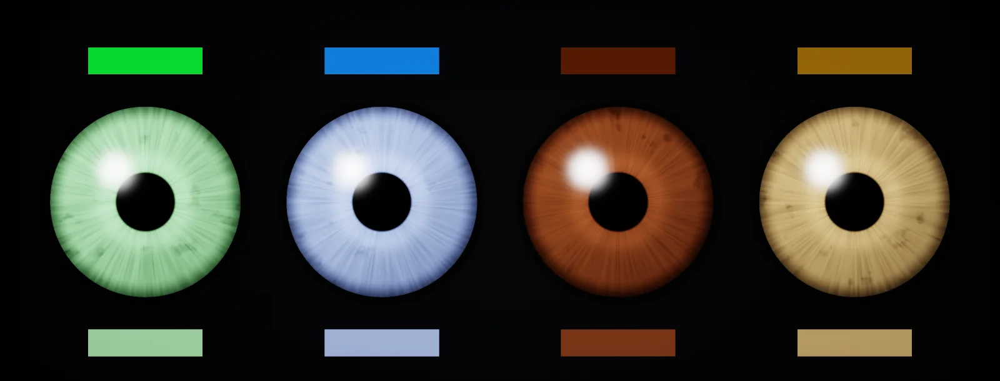

Colour Tinting and Clamping
Colour maths for tintable materials: why to work in linear, why a multiply tint goes dark, the 50 % grey tint-mask convention, luminance and hue, hue-preserving desaturation, clamping to plausible colours, and other tint tools, built in Unity HDRP and Unreal.

Tinting in linear space
A shader that tints by multiplying the stored sRGB numbers gets a different, usually brighter and hue-shifted, result than one that multiplies light:
In practice: textures marked as colour (sRGB on) and colour properties arrive in the shader already converted to linear in Unity, Unreal and every modern engine. Do all tint maths there. Only data maps (masks, roughness) skip the conversion, which is why a grey mask used for tinting must be imported with sRGB on if it was painted as brightness.
Multiply tint
The simplest tint multiplies a texture by a colour. White texels become the tint, everything else becomes darker. A typical diffuse texture averages around 50 % grey in sRGB, which is only about 21 % in linear light, so the material ends up far darker than the colour the artist picked:
Artists then compensate with brighter, more saturated picks, and the result depends on each texture's average. A tint control should mean "this is the colour you will see", which needs a convention for the texture.
Grey tint masks
Treat the texture as a : a greyscale map whose 50 % grey (128 sRGB, 0.214 linear) means "exactly the tint". Divide the texel's luminance by 0.214 and multiply by the tint. Darker texels (crypts in an iris, the shadow side of a weave) go below the tint, lighter ones above it:
Two authoring rules make it work. Remove the colour from the texture and keep its variation: a Levels step that centres the histogram on 128 is enough. And keep the contrast moderate; a texel at 255 shows the tint at 4.7× its brightness, which then hits the clamp of the next chapters.
The tint is now independent of the texture: swapping in another iris pattern keeps the same eye colour. That is the setup used for the iris tint.
Hue at luminance 1
To limit how bright or how colourful a tint may be, it has to be split into brightness and colour. Dividing the colour by its luminance Y leaves the hue at luminance 1, a colour direction that can be scaled to any brightness without changing what colour it is:
Pure blue has a luminance of only 0.07; pure green 0.72. That is why "the same" saturated colours in a picker look so different in brightness, and why a clamp must work on luminance, not on the RGB maximum.
Hue-preserving saturation cap
Saturation in HSV terms is (max − min) / max: 0 for grey, 1 when a channel is zero. Lowering it by mixing towards grey is the natural move, but mixing towards a grey of the wrong brightness changes luminance, and clamping channels changes the hue. Mixing the hue-at-luminance-1 towards (1, 1, 1) does neither: grey at luminance 1 is (1, 1, 1), so the luminance stays 1 and the hue direction stays the same. The mix factor k that lands exactly on the cap smax follows from the saturation formula:
Derivation, for the curious: after the mix, max′ = 1 + k(max − 1) and min′ = 1 + k(min − 1), so the new saturation is k(max − min) / (1 + k(max − 1)). Setting it to smax and solving for k gives the formula above. One division, no trigonometry, no HSV round trip.
Plausible colour ranges
Natural materials occupy a small part of the colour space. Irises run from very dark brown to light grey-blue; no iris is neon green. Dark colours can be quite saturated (a deep brown), light ones only mildly (a pale blue). So the clamp has two parts: limit luminance, then cap saturation with a limit that falls as the colour gets lighter:
| Material | Luminance (linear Y) | Saturation cap | Notes |
|---|---|---|---|
| Iris | 0.006 – 0.32 | 0.88 dark → 0.55 light | dark brown to light grey-blue; bright saturated greens and blues do not occur |
| Non-metal base colour (general) | ≈ 0.012 – 0.86 (30 – 240 sRGB) | case by case | the PBR rule from base colour |
| Skin (albedo) | roughly 0.03 – 0.45 | low; a narrow red-orange hue band | build from references; a hue clamp matters more than saturation |
| Hair (melanin) | roughly 0.005 – 0.5 | falls with brightness | dyed hair needs a separate, wider range |
| Team colours, UI-driven tints | chosen by art direction | chosen by art direction | the clamp keeps every player pick readable under the game's lighting |
The values in the table are starting points from references, not standards; measure your own. The point of the clamp is that it is in the shader: any colour from a picker, a character creator or a script lands somewhere believable, and the hue the user asked for survives.
Hue rotation, gradient maps and masks
- Hue rotation recolours an already coloured texture by rotating every colour around the grey axis. Cheap, but it does not keep luminance: blue turned yellow gets much brighter. Fine for small shifts and variations.
- Gradient maps map the mask's grey value through a ramp texture or a few colour stops. They give a dark-to-light colour journey (dark brown crypts, golden collarette) that a single tint cannot.
- RGB masks (team colours): three channels of one texture select up to three tint regions; each region is tinted with the grey-mask rule.
- Overlay and soft light keep the texture's contrast while pushing towards a colour; they come from image editing and are harder to clamp.
Build it in Unity HDRP
The two functions of this unit as a Custom Function file: a grey-mask tint with plausibility clamps, and a hue shift. They work for irises, skin variations, hair dyes, cloth and team colours. Written for Unity 6 with HDRP 17; Unity 2022 LTS works the same apart from a few renamed menu entries.
- Author the texture as a tint mask: a greyscale map whose average is 50 % sRGB grey (128). Keep the variation (fibres, weave, freckles) and remove the colour. In Substance or Photoshop, a Levels or Auto-Levels step towards a 128 mean does it.
- Import it with sRGB (Color Texture) on: it is still perceptual brightness. Put
Tint.hlslinAssets/Shaders/. - Create the graph: in the Project window, Create > Shader Graph > HDRP > Lit Shader Graph. Open it and check the Graph Inspector > Graph Settings. Add a Color property
Tint(it arrives in linear space) and FloatsLumMin,LumMax,SatDark,SatLight. For irises: 0.006, 0.32, 0.88, 0.55. For skin or cloth, pick ranges from references (see the clamping chapter). - In the graph, add a Custom Function node. Set Type to
File, Source toTint.hlsland Name toTintGreyMask(without the_floatsuffix). Add the inputs Texture (Vector 3), Tint (Vector 3), LumMin (Float), LumMax (Float), SatDark (Float), SatLight (Float) and the outputs Color (Vector 3), in that order and with those types: they must match the function's parameters. Connect Color to Base Color. - Test with extreme picks: pure neon green, pure black, pure white. Each should land inside the range, with its hue kept. If a test colour looks wrong, adjust the range, not the texture.
- For hue variations of an already coloured texture (a red and a blue version of the same fabric), use In the graph, add a Custom Function node. Set Type to
File, Source toTint.hlsland Name toHueShift(without the_floatsuffix). Add the inputs Color (Vector 3), Degrees (Float) and the outputs Result (Vector 3), in that order and with those types: they must match the function's parameters.
#ifndef ATLAS_TINT_INCLUDED
#define ATLAS_TINT_INCLUDED
static const float3 ATLAS_LUM = float3(0.2126, 0.7152, 0.0722); // Rec. 709 luminance, linear RGB
// Keep a colour inside a plausible range: luminance between LumMin and LumMax, and saturation (HSV,
// linear) below a cap that is higher for dark colours than for light ones. Hue and luminance are kept.
float3 Atlas_ClampPlausible(float3 c, float lumMin, float lumMax, float satDark, float satLight)
{
float y0 = max(dot(c, ATLAS_LUM), 1e-6);
float y = clamp(y0, lumMin, lumMax);
float3 h = c / y0; // the hue at luminance 1
float mx = max(h.r, max(h.g, h.b)), mn = min(h.r, min(h.g, h.b));
float sat = (mx - mn) / max(mx, 1e-6);
float satMax = lerp(satDark, satLight, smoothstep(0.03, 0.30, y));
float k = sat > satMax ? satMax / ((mx - mn) - satMax * (mx - 1.0)) : 1.0;
h = lerp(1.0, h, k); // towards grey: keeps hue and luminance
return h * y;
}
// Tint with a grey texture as the mask: 50 % sRGB grey (0.214 linear) shows exactly the tint colour;
// lighter texels go above it, darker below. Tint and Texture in linear space.
void TintGreyMask_float(float3 Texture, float3 Tint, float LumMin, float LumMax, float SatDark, float SatLight,
out float3 Color)
{
float3 tint = Atlas_ClampPlausible(Tint, LumMin, LumMax, SatDark, SatLight);
float detail = dot(Texture, ATLAS_LUM) / 0.214;
Color = saturate(tint * detail);
}
// Hue rotation around the grey axis (Rodrigues), cheap and luminance-ish preserving for small angles.
void HueShift_float(float3 Color, float Degrees, out float3 Result)
{
float a = radians(Degrees);
const float3 k = float3(0.57735, 0.57735, 0.57735);
float c = cos(a), s = sin(a);
Result = Color * c + cross(k, Color) * s + k * dot(k, Color) * (1.0 - c);
}
#endifClamps run per pixel on a constant colour; the compiler often folds them into a few instructions. If the tint is per material only, you can also clamp in C# when the colour is set, but keeping it in the shader means nobody can bypass it.
Build it in Unreal Engine
The same tint and clamp in a Custom node. Vector Parameters in Unreal hold linear colours, so the maths is identical to the HDRP version. Written for Unreal Engine 5.6 and later. Substrate is production-ready from 5.7; check Project Settings > Rendering > Substrate to see which material model a project uses.
- Import the grey mask with sRGB on (Compression
DefaultorGrayscale). - Add a Vector Parameter
Tintand Scalar ParametersLumMin,LumMax,SatDark,SatLight. - Add a Custom node with
TintGreyMask.ush, inputs as named in the file, Output TypeCMOT Float 3, into Base Color. - Expose Tint in Material Instances; artists and Blueprints can set any colour and the material keeps it plausible. For runtime colour pickers, the same clamp protects you from extreme player choices.
- Hue variation of coloured textures: the engine's HueShift material function does a hue rotation; prefer the grey-mask approach when you control the texture.
// Custom node "TintGreyMask". Inputs: Tex (float3, the grey mask sample, Sampler Type Color), // Tint (float3, a Vector Parameter: linear), LumMin, LumMax, SatDark, SatLight (float). // Output Type: CMOT Float 3. const float3 L = float3(0.2126, 0.7152, 0.0722); float y0 = max(dot(Tint, L), 1e-6); float y = clamp(y0, LumMin, LumMax); float3 h = Tint / y0; // hue at luminance 1 float mx = max(h.r, max(h.g, h.b)), mn = min(h.r, min(h.g, h.b)); float sat = (mx - mn) / max(mx, 1e-6); float satMax = lerp(SatDark, SatLight, smoothstep(0.03, 0.30, y)); float k = sat > satMax ? satMax / ((mx - mn) - satMax * (mx - 1.0)) : 1.0; float3 tint = lerp(1.0, h, k) * y; // desaturated towards grey, hue and luminance kept return saturate(tint * dot(Tex, L) / 0.214); // 50 % sRGB grey in the mask = exactly the tint
Sources and further reading
The formulas and engine details in this unit come from these references. Engine documentation changes between versions.
- SpecITU-R BT.709: parameter values for HDTVITUThe luminance weights of linear RGB.
- ArticlesRGB transfer functionWikipediaThe curve between stored values and linear light, and 128 → 0.214.
- GuideThe PBR Guide, part 2Wes McDermott · Adobe Substance 3DBase colour ranges for non-metals.
- ArticleRodrigues' rotation formulaWikipediaThe hue rotation around the grey axis.